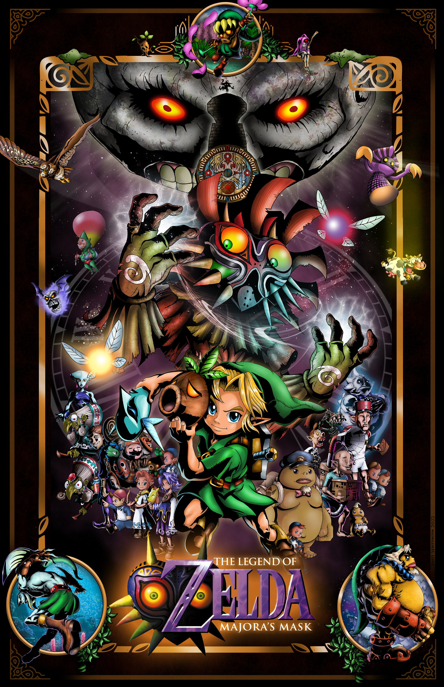

The legend of zelda: Ocarina del tiempo
Aproximadamente 10 años antes de los acontecimientos de The Legend of Zelda: Ocarina of Time, hubo un conflicto a gran escala conocido como la Guerra Civil de Hyrule. Una mujer que había estado escapando de los estragos de la guerra, logra llegar al Bosque Kokiri, un santuario que impide la entrada a forasteros gracias a la protección del Gran Árbol Deku. La madre, gravemente herida, deja al niño al cuidado del Gran Árbol Deku, tras lo cual muere finalmente.
El niño sería criado como un Kokiri, el cual no era consciente de su destino hasta que un día el Rey de las Tinieblas (Ganondorf), apareció en el bosque y le exigió una piedra espiritual al Gran Árbol Deku. El árbol, poderoso guardián, se negó a darle la piedra sintiendo sus malas intenciones. Tras su negación, Ganondorf maldijo al Árbol Deku previendo su muerte.
Link, el joven al que su madre había dejado en el Bosque Kokiri, tiene una pesadilla. En ella, se ve al lado de un castillo, y de repente sale un caballo con dos personas huyendo de algo. Entonces, Link se da la vuelta y ve a un hombre fuerte con un semblante maligno. El Gran Árbol Deku suplica a Navi, un hada joven del Bosque Kokiri, encontrar a ese niño y presentárselo. Navi encuentra a Link, lo despierta de su pesadilla y le cuenta la misión que le ha encomendado el Gran Árbol Deku. Link, tras obtener la Espada Kokiri y el Escudo Kokiri, se presenta ante el Árbol Deku. El árbol le cuenta a Link la maldición que recae sobre él, y le pide al valiente joven que entre en él para tratar de romper la maldición.
Link entra en el interior del Árbol Deku y con éxito derrota a los enemigos, pero el Árbol Deku revela que ya era demasiado tarde para él, incluso antes de entrar. En sus últimos momentos de vida, el Árbol Deku le cuenta a Link la creación de Hyrule y la Trifuerza, y el deseo de Ganondorf de conseguir esto último, revelando así que el destino de Link es frustrar los planes de Ganondorf y restaurar la paz en Hyrule. Tras esto, el Árbol Deku le da la Piedra Espiritual del Bosque a Link, una de las tres llaves para abrir las puertas al Reino Sagrado, donde se encuentra la Trifuerza. El Árbol Deku, por último, le indica a Link que ha de buscar a Zelda, la princesa de Hyrule, y que Navi le acompañará durante su aventura. El Gran Árbol Deku, tras haber cumplido su objetivo, se marchita y muere.
Link abandona su tierra natal y una amiga Kokiri, Saria, le regala una ocarina con la que podrá interpretar canciones que tienen poderes mágicos tales como hablar con Saria desde largas distancias, hacer que salga el sol, hacer que llueva, probar la amistad con la familia real, entre otros.

The legend of zelda: Majora's Mask
La historia de Majora's Mask se establece después de los acontecimientos de Ocarina of Time. Después de la derrota de Ganondorf, Link es enviado de vuelta a su tiempo para que pudiera volver a vivir su infancia. Después de algún tiempo, él emprende un viaje con su caballo, Epona, para encontrar un amigo no identificado que perdió después de su batalla contra el mal. Un efecto sonoro de hada se reproduce cuando esta información es dada en el juego, probablemente implica que este amigo es Navi, compañera hadas de Link que se marcho al final de su aventura en Ocarina of Time.
Mientras viajaba por la parte profunda del Bosque Perdido, Link es emboscado y derribado de su caballo por Skull Kid, un extraño ser que lleva una peculiar máscara, y sus dos amigos, las hadas Taya y Tael. Skull Kid inicialmente parece reconocer a Link de alguna manera, pero rápidamente lo descarta, tomando su Ocarina del Tiempo. Mientras que Skull Kid intenta tocar la ocarina, Link vuelve en sí, y se acerca a Skull Kid, tratando de arremeter contra él para recuperar su ocarina, pero Skull Kid rápidamente monta en Epona y trata de escapar. Link es capaz de aferrarse a Epona por un tiempo antes de caer, tratando de perseguir a Skull Kid. Link los sigue hasta una entrada que conduce a un gran árbol hueco. Una vez dentro, Link se encuentra en el borde de un gran abismo, y es demasiado tarde para salvarse de caer en él.
En el interior del abismo, Link se enfrenta al regodeo de Skull Kid, que afirma que "se deshizo" del caballo de Link. Usando los poderes malignos de la máscara, Skull Kid transforma a Link en un Matorral Deku. Tras esto, Skull Kid se marcha, pero Taya se queda atrás separandose de su hermano, Tael, y no tiene más remedio que pedir la ayuda de Link para reencontrarse con sus compañeros. Después recorrer un complejo de cuevas subterráneas, Link se encuentra con el misterioso Vendedor de Máscaras, quien tiene el poder de devolverle a su verdadera forma, aunque en primer lugar Link debe recuperar su Ocarina del Tiempo. A cambio, le pide a Link que recupere la Máscara de Majora que portaba Skull Kid.

The legend of zelda: Twilight Princess
Twilight Princess comienza en Ordon, una pequeña aldea situada en las afueras de Hyrule, en la Región de Latoan. En este lugar, un joven llamado Link vive una vida sencilla, trabajando al cuidado del ganado. Un día, Moy propone a Link que le acompañe a la entrega de la Espada de Ordon y Escudo Ordon como regalos para la Familia Real de Hyrule para el Festival de Hyrule. Sin embargo, el mismo día en que se supone que hace la entrega, unas criaturas hostiles aparecen en el manantial del espíritu, donde Ilia, Epona e Iván se encuentran. Estos monstruos secuestran a Ilia, Iván, Lalo, Talo y Bea. También se llevan a la yegua de Link, Epona. Link al intentar evitar esto queda inconsciente a manos de uno de esos seres. Cuando recupera la consciencia, corre para tratar de seguirles y se encuentra con una pared grande y oscura. Un brazo de un Ser de las Sombras aparece y agarra a Link, introduciendolo al otro lado de la pared. Link aparece en un mundo extraño denominado Crepúsculo, que afecta a su forma hyliana y, gracias al poder de la Trifuerza en su mano, hace que se transforma en un lobo. Tras transformarse se desmaya, y es llevado a los calabozos del Castillo de Hyrule por otro monstruo.
Dentro de las mazmorras del Castillo de Hyrule, se encuentra con otra extraña criatura llamada Midna, miembro de la raza Twili. Después de ayudar a Link a salir del calabozo, Midna decide acompañar a Link. Después de salir de las alcantarillas y un peligroso ascenso hasta las torres del castillo, se encuentran con la Princesa Zelda. Ella le dice a Link lobo que, sin saberlo el resto del mundo, la monarquía de Hyrule ha sido derrocada por Zant, un Twili poderoso que se hace llamar el "Rey de la realidad". Su plan es cubrir toda la extensión de Hyrule en el Crepúsculo, fusionando Hyrule y su reino, el reino del Crepúsculo, en un terreno bajo su gobierno. Link y Midna son transportados de nuevo a la Región de Latoan. Aquí, después de tomar una espada y un escudo de Ordon, una voz extraña del Manantial de Ordon llama a Link y a Midna. El espíritu de Latoan, uno de los Espíritus de la Luz, dice que Zant ha cubierto las regiones de Hyrule en el Crepúsculo y maldijo a los Espíritus de la Luz. Para que Link disuelva el Crepúsculo, debe recuperar los Lágrimas de Luz para restaurar el poder de los Espíritus de la Luz. Midna también le dice a Link que para detener a Zant necesitaran recuperar la Sombra Fundida, un objeto antiguo de gran poder.

The legend of zelda: Four Swords Adventure
La historia tiene lugar cientos de años después de la muerte de Ganondorf en The Legend of Zelda: Twilight Princess. Comienza con la tierra de Hyrule en un estado de miedo debido a los sucesos extraños que han ocurrido en los últimos días. En una noche de tormenta, la Princesa Zelda y las doncellas del santuario temen que el motivo de estos acontecimientos sea que el sello de Vaati se está debilitando. Se convoca a Link y va al castillo para que pueda protegerla a ella y a las otras doncellas mientras abren el portal al Santuario de la Espada Cuádruple. Cuando lo hacen, sin embargo, una figura oscura aparece en el portal.
Esta figura resulta ser Link Oscuro, quien secuestra a las doncellas y las sella en cristales. Link lo sigue hasta el santuario donde extrae la Espada Cuádruple para destruir a esta versión malvada de sí mismo. Cuando lo hace, Vaati es una vez liberado y causa estragos en el reino.
A medida que avanza el juego, Link se entera de que la creación de su homólogo malvado y la liberación de Vaati es sólo una pequeña parte en un complot para tomar el control de Hyrule. Las cosas se complican cuando la dimensión del Mundo Oscuro aparece y la gente está siendo secuestrada a lo largo de Hyrule. Link se entera de que los Caballeros de Hyrule misteriosamente desaparecieron, pero las versiones malvadas de ellos están creando estragos. El castillo ha sido tomado y los monstruos aparecen por todas partes.
Se revela más adelante en el juego que el verdadero villano no es otro que Ganon, Rey de las Tinieblas. Ha robado un poderoso tridente que utilizó para tomar el control de partes de Hyrule. También robó el Espejo Oscuro, usándolo para crear a Link Oscuro y luego mandarlo a secuestrar a las doncellas, obligando a Link a sacar la Espada Cuádruple, liberando a Vaati. Ganon quería hacerse con el control total de Hyrule y construir un ejército. Para ello, quiere tomar el control del poder a las doncellas, así como secuestrar a gente y enviarlos al Mundo Oscuro, donde se convertiría en parte de su ejército. Vaati, sin saberlo, amplió sus planes al crear monstruos que añadir a su ejército. También se revela que los Caballeros de Hyrule fueron asesinados por Ganon y sus almas fueron atrapadas en el Mundo Oscuro donde se convirtieron en criaturas de la oscuridad. Link finalmente salva a las doncellas, recupera el Espejo Oscuro, destruye a Link Oscuro y Vaati, y se enfrenta a Ganon en un momento decisivo. Link derrota a Ganon y lo sella firmemente en la Espada Cuádruple. Vuelve la paz a Hyrule y la gente celebra que todos los rastros del mal que afectaron a Hyrule han sido vencidos.